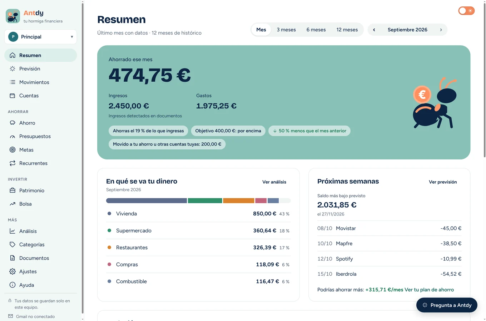

Llegeix els extractes que ja descarregues:BBVACaixaBankimaginSantanderSabadellINGOpenbankBankinterN26RevolutNorma 43
Tres passos i ja ho saps.
-
Descarrega l'Antdy
Instal·la-la al teu ordinador amb Windows. No demana registre ni correu, i s'actualitza sola.
-
Importa el teu extracte
Arrossega el PDF, Excel o CSV que descarregues del teu banc, o deixa que l'Antdy el busqui al teu Gmail.
-
Mira quant estalvies
L'Antdy ordena les teves despeses, separa el que mous entre els teus comptes i et dona la xifra: ingressos menys despeses, mes a mes.
Els teus comptes no surten de casa.
L'Antdy no té servidors. El que importes es queda al teu ordinador i al teu mòbil, i ningú més ho pot veure.
Sense registre ni claus del banc
No crees cap compte ni dones les teves contrasenyes. Importes els extractes que ja descarregues del teu banc.
Sota clau
Un PIN, la teva empremta o Windows Hello per obrir l'app. Al mòbil, a més, les dades van xifrades.
Sincronitza amb el teu propi Drive Amb l'app del mòbil
L'ordinador i el mòbil es posen al dia amb una còpia xifrada al teu Google Drive que només els teus dispositius saben obrir.
Al teu ordinador · gratis
Tot el bàsic, gratis i sense data de caducitat.

Importa en un moment
Arrossega l'extracte o deixa que l'Antdy el trobi al teu Gmail. Treu els duplicats i reconeix els traspassos entre els teus comptes.
Apunta una despesa
Un pagament amb targeta que encara no és a l'extracte ja compta en el mes. En importar, s'uneix amb el moviment del banc i mai no compta dues vegades.
Despeses que s'ordenen soles
Categories automàtiques i regles que aprenen dels teus canvis: aquell càrrec de PayPal de 6,99 € passa a dir-se «Crunchyroll».
Pressupostos i metes
Com vas aquest mes en cada categoria i quant et falta per al viatge o per al teu coixí.
Previsió
El teu saldo dia a dia durant els propers 60 dies, amb nòmines, rebuts i quotes, i com acabaràs el mes.
Avisos que importen
Un pressupost a punt d'acabar-se, un càrrec repetit o fora del normal, una pujada de preu o un rebut que és a punt d'arribar.
Pregunta a l'Antdy
Escriu el que vulguis saber, com ara «Quant he gastat en restaurants aquest mes?», i et respon amb les teves dades.
Borsa i patrimoni
Les teves accions, els teus comptes i tot el que tens, al mateix lloc que les despeses.
Diverses persones, un ordinador
Cada persona amb el seu perfil, el seu PIN i les seves dades totalment separades.
Xifres que quadren
«Comprova els meus números» revisa que l'estalvi, les categories i els saldos coincideixin amb els teus extractes, i t'explica qualsevol diferència.
App del mòbil · gratis
El mòbil per al dia a dia. L'ordinador per entendre-ho.
Quatre pestanyes i una idea per pantalla: quant portes estalviat, els teus moviments, el teu pla del mes i afegir un extracte o una despesa.
- Apunta un pagament amb targeta a l'instant. Quan importes l'extracte, s'uneix al moviment real i no compta dues vegades.
- Obre l'extracte des del correu o l'app del banc amb «Comparteix → Antdy».
- El que fas al mòbil apareix al teu ordinador, i al revés.


Antdy Plus · a l'ordinador · gratis de moment
Un pla per gastar menys, fet amb les teves pròpies compres.
Plus converteix els teus moviments en plans amb data i pautes concretes, i els segueix tot sol cada vegada que importes un extracte.
Plans d'estalvi personalitzats
De quant a quant baixar, en quantes setmanes i quant avança les teves metes. T'avisa si et desvies.
Anàlisi a fons
Flux dels diners, comerços, hàbits, ritme del mes, despesa fixa i variable amb la teva inflació personal, i ingressos.
Informe en PDF
El teu període resumit, a punt per desar-lo o repassar-lo a casa.
El que vingui després
Les funcions que s'afegeixin a Plus t'arriben sense pagar més.
Supermercat: de 410 € a 340 € al mes
Estalvies 70 € al mes i 840 € l'any. «Entrada del pis» s'avança 2 mesos.
Vas 12 € per sota de l'objectiu d'aquesta setmana
- Hi vas 15 vegades al mes, i 7 són compres de menys de 15 € en botigues de proximitat.
- Una compra gran el dissabte i una reposició el dimecres, amb llista tancada.
- Límit setmanal de 90 € les setmanes 1 a 4 i de 85 € les setmanes 5 a 8.
Un preu clar, com els teus comptes.
Antdy
Gratis
A l'ordinador i al mòbil, per sempre.
- Importar extractes i Gmail
- Moviments, categories i regles
- Pressupostos, metes, previsió i avisos
- Borsa, patrimoni i diversos perfils
- App del mòbil i sincronització
Antdy Plus
Gratis de momentGratis
Fins que obri la botiga, Plus ve inclòs a l'app.
Després serà un pagament únic: 19 € de llançament i 29 € més endavant.
- Tot el de l'Antdy gratis
- Plans d'estalvi amb seguiment
- Anàlisi a fons i informe en PDF
- En fins a 3 ordinadors
- Totes les actualitzacions incloses
Quan obri la botiga, qui ja faci servir l'Antdy tindrà 30 dies per continuar provant Plus. El que és gratuït continua sent gratuït.
Preguntes
On es guarden les meves dades?
Al teu ordinador i, si fas servir l'app, al teu mòbil. Quan activis la sincronització, també al teu propi Google Drive, xifrades amb una clau que només tenen els teus dispositius. Ningú més les veu, tampoc qui fa l'Antdy.
He de donar les claus del meu banc?
No. L'Antdy treballa amb els extractes que descarregues del web o l'app del teu banc, o amb els que t'arriben per correu.
Funciona amb el meu banc?
Llegeix els PDF de BBVA, CaixaBank i imagin, i els Excel o CSV que exporten BBVA, CaixaBank, imagin, Santander, Sabadell, ING, Openbank, Bankinter, N26 i Revolut. De qualsevol altre banc serveix el fitxer Norma 43 o un CSV amb data, concepte i import, i els PDF també solen funcionar.
He de pagar per Plus?
De moment, res: Plus ve inclòs gratis a l'app. Quan obri la botiga, un únic pagament et donarà Plus per sempre en fins a tres ordinadors, amb totes les actualitzacions, i el podràs provar 30 dies abans de decidir.
I si no compro Plus?
Continues fent servir tot el que és gratuït sense límit de temps ni de moviments, i les teves dades continuen allà.
Windows m'avisa en obrir l'instal·lador. És normal?
Sí. L'Antdy encara no té signatura digital d'editor, així que Windows pot mostrar un avís de SmartScreen. Prem «Més informació» i després «Executa igualment». Descarrega-la sempre des d'aquesta pàgina.
L'he de tornar a descarregar per tenir les novetats?
No. L'Antdy s'actualitza sola i, quan l'obres després d'una actualització, t'ensenya les novetats. Les teves dades es queden com estaven.
Hi ha versió per a Mac?
Encara no. L'Antdy funciona a Windows 10 i 11, i les apps d'Android i iPhone arriben molt aviat.
Comença amb l'extracte d'aquest mes.
En un parell de minuts sabràs quant has estalviat de debò.